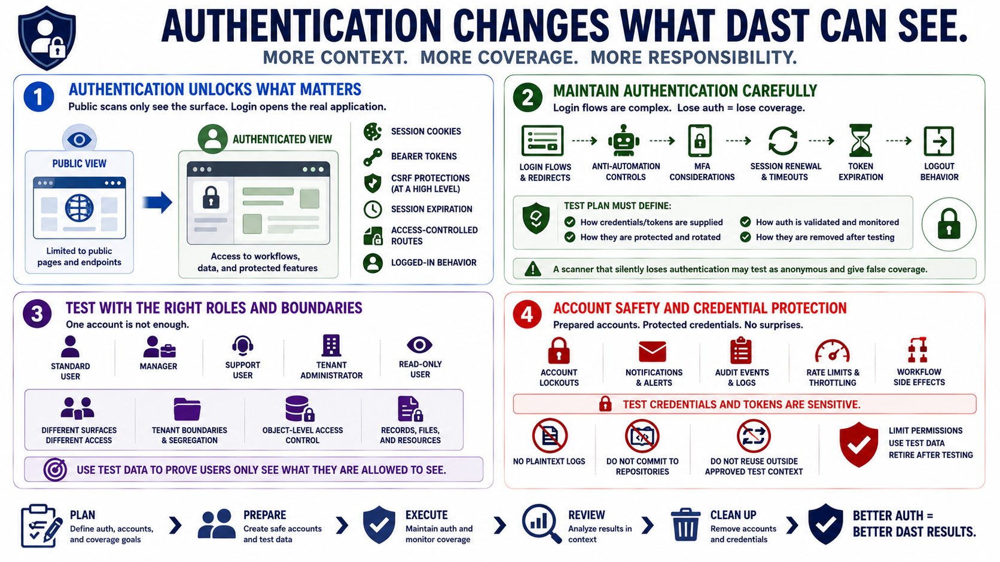

Authentication, Sessions, and Test Accounts
Connecting to LMS... Progress: in progress

Narration
Authentication changes what DAST can see. Many meaningful security issues appear only after login, inside workflows that use roles, tenants, preferences, account settings, or sensitive records. Authenticated DAST can evaluate session cookies, bearer tokens, CSRF protections at a high level, session expiration, access-controlled routes, and logged-in application behavior that public scanning cannot reach.
Scanner authentication must be maintained carefully. Login flows may include redirects, anti-automation controls, multifactor authentication considerations, session renewal, token expiration, and logout behavior. A scanner that silently loses authentication may continue testing as an anonymous user and produce misleading coverage. Test plans should define how credentials or tokens are supplied, protected, rotated, and removed after testing.
Role-based test accounts are important because one account rarely represents the whole application. A standard user, manager, support user, tenant administrator, and read-only user may each reach different surfaces. Testing tenant boundaries and object-level access control requires accounts and data that can demonstrate whether a user is limited to authorized records, objects, files, or resources.
Account safety matters. DAST can trigger account lockouts, notifications, audit events, rate limits, or workflow side effects if accounts are not prepared. Test credentials and tokens are sensitive because they may provide access to application functionality and test data. They should not be stored in plaintext logs, committed to repositories, or reused outside the approved test context.